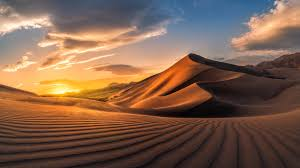
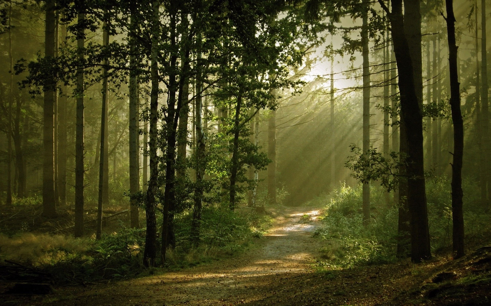
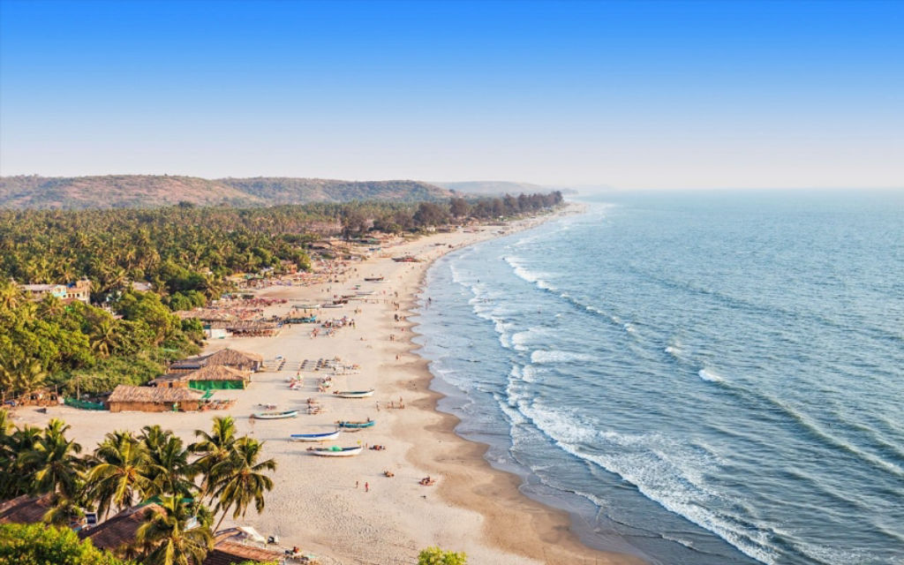
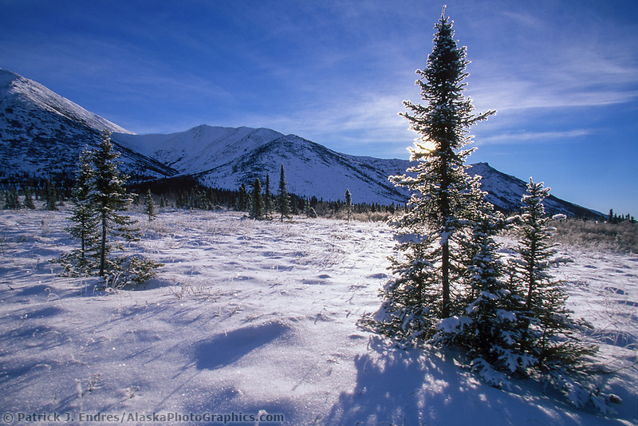
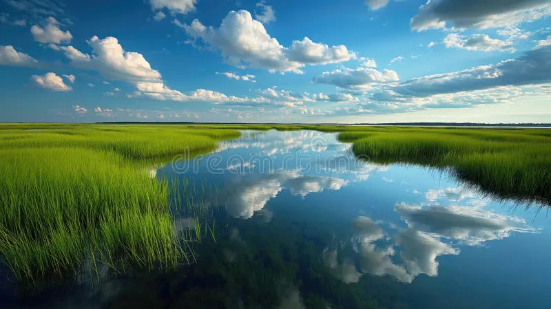
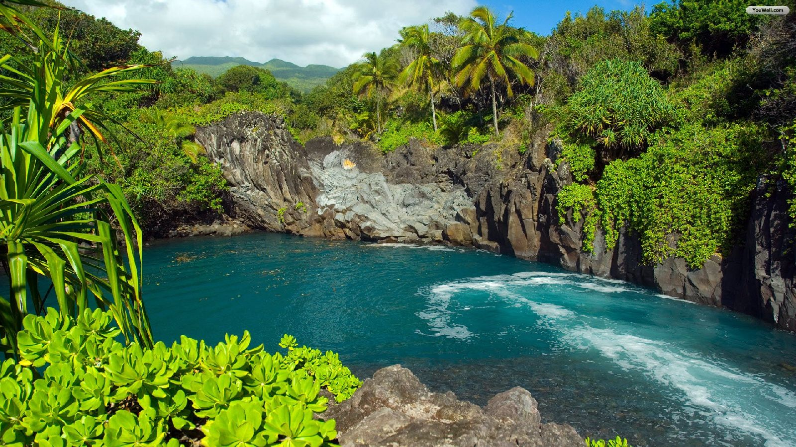

Name |
Description |
Uses |
Region |
Photo |
| Desert |
Dry, barren area with little rainfall and extreme temperatures. |
Mining, tourism, renewable energy (solar). |
Middle East, North Africa, Southwest USA |
 |
| Garden |
Man-made landscape with arranged plants, flowers, and structures. |
Recreation, relaxation, biodiversity conservation. |
Worldwide |
 |
| Woodland |
Area densely populated with trees, shrubs, and wildlife. |
Lumber, recreation, conservation, habitat for wildlife. |
North America, Europe |
 |
| Coastal |
Area where land meets the ocean or sea, featuring beaches or cliffs. |
Fishing, tourism, transport, biodiversity. |
Global coastal regions |
< |
| Tundra |
Cold, treeless landscape with frozen subsoil. |
Research, climate monitoring, indigenous communities. |
Arctic, Antarctica |
 |
| Wetland |
Land saturated with water, home to diverse species. |
Water filtration, flood control, wildlife habitat. |
Worldwide (river deltas, coastal areas) |
 |
| Snowscape |
Snow-covered landscape in colder climates or seasons. |
Skiing, tourism, water resource (snowmelt). |
Alps, Himalayas, Antarctica |
 |
| Tropical |
Warm, lush, and dense forest area found near the equator. |
Tourism, biodiversity, carbon storage. |
Amazon, Congo Basin, Southeast Asia |
 |